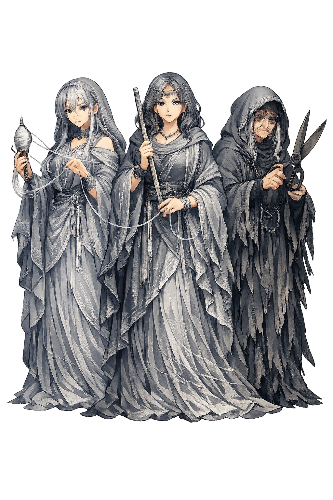

Stories of Moirai
The Moirai’s mythology is scattered across the whole of Greek epic and philosophy — a genealogy told twice, two births they attend out of jealousy and pity, a loophole a god must pay for, and a final Platonic vision that hands fate back to the chooser. Their stories are always about the same question: who, in the end, is responsible for a life?
Hesiod gives the Moirai two mothers. In the Theogony 217–222 they are born of Nyx, Night, among the dark powers that plague mortals — a lineage that makes them older than the Olympians and accountable to no one. Later in the same poem (901–906), the Zeus who has overthrown his own father marches order into the cosmos by wedding Themis, “Right,” who bears him the Moirai and the Horai, the Seasons. The double genealogy is a theology in miniature: fate is either the brute lot dealt by night, or the portion assigned within a just government of the world. Later tradition chose the second — but never quite forgot the first. The myth means the Greeks could not decide whether fate preceded justice or was its instrument, and so they kept both births.
Homer’s most personal scene for the Moirai comes in Iliad 19.91–133. When Alkmene was due to bear Herakles, Zeus boasted on Olympus that a child of his blood would be born that day, “lord of all his neighbors.” Hera, in jealous cunning, swore to make the boast true — and delayed the birth: she sent Eileithyia, goddess of childbirth, to sit with folded hands and crossed legs, holding back the labor, while she hastened the birth of Eurystheus, a seven-months child of the weaker line. Only when a servant girl, Galinthias, tricked Eileithyia into rising did Alkmene deliver. The story means that even the birth of Greece’s greatest hero hung on a technicality of fate: Zeus’ word was kept, and still Herakles grew up the servant of the weaker man born first.
Iliad 9.529–599 preserves the oldest telling. When Queen Althaea of Kalydon bore Meleager, the Moirai appeared standing by her bed and announced that the boy would live only until the log then burning on the hearth was consumed. Althaea snatched the brand from the fire and hid it away, and her son grew to manhood — handsome, brave, the slayer of the Kalydonian boar. Years later, in the quarrel over the hide, Meleager killed her brothers; in grief and rage Althaea brought the log out and burned it, and her son died as the fire died. Phoenix tells the tale in the embassy to Achilles as a warning against wrath. The myth means that the length of a life is a physical object — and the people we love are the ones who keep it.
Apollo once served a mortal year for his sins — Admetos, king of Pherai, a just man. To repay his kindness, the god made the Moirai drunk: he begged them to spare Admetos, and in their cups they promised that the king would live if someone else died in his place. Admetos’ aged parents refused; his wife Alkestis did not. Euripides opens his Alcestis (1–27) with Apollo explaining the bargain, and the play that follows is its terrible accounting: Admetos, spared, watches every kinsman refuse the substitute death one after another, until his young wife steps forward and goes to the grave in his stead. Apollodorus (Library 3.10.4) and Hyginus (Fabulae 50–51) retell the story and name the king of Pherai; later Christian readers noted that the barter of lives sits at the edge of their own oldest story. The myth means that even a loophole in fate is a debt someone must pay — and the loopholes the gods grant mortals are written in somebody else’s life.
Plato’s Republic ends with the myth of Er (10.614b–621d). The souls of the dead arrive at the plain of Forgetfulness, where the three Moirai sit at the throne of Necessity, singing — Lachesis of the past, Klōthō of the present, Atropos of the future — while the spindle of the cosmos turns. Each soul draws a lot fixing the order of choosing, then chooses its next life; Lachesis sends with each the daimōn it has chosen as guardian. When the choosing is done, each soul drinks from the river of forgetfulness and is born. The vision states the boldest thing Greek philosophy said about fate: the Moirai supply the menu, but the chooser is responsible — “the responsibility is the chooser’s; god is blameless” (10.617e).
Fate
The Moirai are the three Apportioners — Klōthō the Spinner, Lachesis the Allotter, and Atropos the Unturning — who spin, measure, and cut the thread of every life, god and mortal alike. Older than Zeus in one of their two genealogies, they are the one power even the gods do not govern: fate, portion, the measured length of a life.
She spins the thread of life on her spindle; nothing that lives is exempt from her thread (Plato, Republic 10.617c).
She casts the lots and measures each thread — the length of days dealt to every being at birth.
“She who cannot be turned”: her shears cut the thread, and her name becomes death itself in Greek usage.
Zeus is their advisor at most, never their master: Homer has them spin the fates of heroes at birth (Iliad 20.127–128; 22.209–213).
From the original script to the living URL
Μοῖραι
The name in its original Greek form. Moirai (Μοῖραι) is attested in the source tradition — “Apportioners (from μείρομαι)”. Its diphthongs and acute accents carry the full phonetic and orthographic weight of the source tradition.
moirai
The plain moirai form is identical to the Unicode restoration. Because this name is already written in Latin letters, no diacritics, stress, or script information were lost — only capitalization differs.
Moirai
The Unicode restoration does not need to recover lost marks for Moirai. Its value is canonical spelling and consistent cataloguing, not the reconstruction of erased orthography. The domain is readable as-is to both DNS and humanity.
Moirai.com
This restoration is written entirely in ASCII letters — no Punycode encoding stands between Moirai and the DNS. The domain reads identically to machines and to human eyes.
Owned, ideal, and ASCII forms of Moirai
Moirai
Restores Μοῖραι. The full Unicode restoration. moirai.com is not in the PuniCodex collection — it is watched for release; if it drops, this temple upgrades to an owned flagship.
How Moirai was spoken
How Moirai is preserved in writing
A bespoke provenance study for Moirai is being prepared by the PUNICODEX scholarly team.
Contribute scholarly provenance →The Moirai are Greek theology’s quietest, most radical idea: that the universe has a budget. Every life is allotted — spun out, measured, cut — and neither prayer nor virtue can extend the thread by a single cubit, though in the Odyssey Zeus protests (and concedes) that mortals blame the gods for what their own recklessness brings. Homer already contains the argument the philosophers will spend four centuries having: is fate compulsion, or only foreknowledge?
Enter Extended Lore